Etrian Odyssey est une série de D-RPG (Dungeon-RPG) au tour par tour dans lesquels vous dirigez une guilde d'aventuriers explorant un immense donjon appelé Yggdrasil. Les jeux se déroulent dans le même univers, même si seuls les deux premiers sont explicitement liés. Les trois premiers titres sont sortis sur DS, et les deux suivants sur 3DS. La franchise comporte également des remakes des deux premiers (les Untold) sur 3DS, deux titres plus orientés action (les Mystery Dungeon) et un ultime titre servant de chant du cygne de la série sur console portable (Nexus).
La série possède quelques spécificités. Tout d'abord, elle utilise de façon très active l'écran tactile : les joueurs doivent dessiner eux-mêmes la carte du donjon au fur et à mesure qu'ils l'explorent. La carte est affichée en permanence sur l'écran tactile, tandis que l'écran du haut est réservé à la vue à la première personne pendant l'exploration ou les combats. Ensuite, des ennemis très puissants sont visibles directement à l'écran et sur la carte : les FOE (Formido Oppugnatura Exsequens). Ceux-ci se déplacent au tour par tour en même temps que les joueurs, y compris lorsque ceux-ci sont en combat. Combat qu'ils peuvent rejoindre, ce qui signifie généralement un game over, car ces ennemis sont trop puissants pour être affrontés directement lorsque vous explorez le labyrinthe... Enfin, le jeu met l'accent sur l'expérimentation et la personnalisation, encourageant les joueurs à changer les compétences et l'équipement de leurs personnages tout en donnant des descriptions assez succinctes pour favoriser l'imagination.
Les jeux sont connus pour être assez difficiles, surtout comparés aux standards récents. Il n'est pas rare de se faire atomiser par des ennemis de base lorsqu'on les sous-estime ou qu'ils vous prennent au dépourvu et ont donc un tour gratuit. Une autre spécificité est la prévalence des buffs/debuffs et des statuts, souvent médiocres dans les RPG. Dans Etrian Odyssey, au contraire, ceux-ci sont extrêmement importants et efficaces. Chaque compétence (des personnages ou des ennemis) est liée à une partie du corps, laquelle peut être la cible d'un bind, qui empêche alors d'utiliser les compétences liées au membre visé. Les binds peuvent se cumuler entre eux et avec un des statuts plus classiques (confusion, poison, sommeil...). Ceci permet une grande flexibilité dans les builds : pas nécessairement besoin de tank ou de healer si vous avez suffisamment de buffers, debuffers ou inflicteurs de statuts et binds. Enfin, la musique, composée par Yuzo Koshiro, est absolument excellente. Les opus sur 3DS ont une orchestration symphonique, mais les titres sur DS ont une orchestration PC-98 totalement géniale. J'ai regroupé mes morceaux favoris dans une playlist Youtube.
Notez que la série s'améliore avec le temps. Outre la qualité et lisibilité des divers menus ou la suppression de certains éléments inutilement frustrants, les jeux s'harmonisent et deviennent de plus en plus intéressants. Les deux premiers titres souffrent d'un mauvais équilibrage et de compétences-piège ainsi que de multiples bugs, le troisième est moins buggé mais sa nouveauté (les sous-classes) est tellement déséquilibrée que c'en est hilarant... Le quatrième et le cinquième opus sont plus polis, bien qu'ils aient leur lot de problèmes divers.
Je recommande chaudement la série aux joueurs de RPG qui cherchent un défi à relever. Cependant, soyez avertis que les titres sur DS ont potentiellement mal vieilli. Si vous voulez vous faire une idée, essayez le IV qui est le plus accessible. Cela étant dit, j'ai joué aux jeux dans l'ordre chronologique, donc c'est possible si vous êtes prêts à pardonner les défauts de polissage des vieux jeux...
Enfin bref... Venons-en à ce top. Le labyrinthe d'Yggdrasil est toujours divisé en six strates (cinq pour le jeu principal, une qui vient après le boss de fin et est généralement un défi encore plus relevé que le jeu de base) de longueurs variables (5 étages pour le I, le II et le V, 4 étages pour le III (sauf la sixième strate qui en compte 5) et 3 étages pour le IV... lequel compense en ayant des donjons optionnels à côté). Chaque strate a un visuel particulier, des ennemis spécifiques, un thème, un boss... bref, une ambiance unique. Mais également des mécaniques ou une architecture spécifiques. J'ai donc voulu faire un petit classement de chaque strate entre les jeux. Ce classement est bien entendu personnel, et basé à la fois sur les mécaniques, le visuel, la musique et le sentiment que j'ai ressenti en la parcourant.
Sans plus attendre, le classement des strates ! Je donnerai à chaque fois le nom de la strate, un visuel, le thème musical et une petite explication de mon ressenti, suivi d'un bon et d'un mauvais souvenir. Attention, je spoile comme un sale.
La première strate est celle où vous découvrez le labyrinthe. Vous venez de créer votre guilde, vous êtes encore faible et frileux. Le jeu doit donc vous mettre dans l'ambiance et vous préparer à ce que vous allez vivre dans le reste du jeu. En général, il va donc vous mettre des coups de pied dans le ventre. C'est là où vous serez le plus fragile, les ennemis étant à peu près tous capables de tuer vos aventuriers en deux ou trois attaques. Vous serez introduits aux FOE et apprendrez l'importance de prioritiser les ennemis dans les combats.
Anecdote : les titres des thèmes musicaux contiennent tous le mot « Woodland ».
| 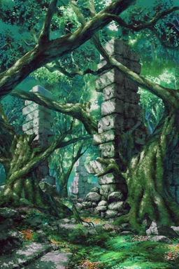 |
Thème : Woodland Ruins Cette strate illustre le principal problème d'Etrian Odyssey II : le jeu est trop proche de son prédécesseur. Une première strate qui est encore une forêt banale. Des FOE agressifs introduits au troisième étage. Un boss qui a des FOE dans sa pièce, lesquels viendront rejoindre le combat. Mécaniquement, il y a quelques originalités (les FOE volants du quatrième étage par exemple), mais rien de bien folichon. Pas une mauvaise strate, juste un fort sentiment de déjà-vu. |
|
Thème : Cerulean Woodlands Pas grand-chose à dire sur cette strate... Le joueur a déjà parcouru un petit labyrinthe (Old Forest Mine) pour s'exercer, donc il s'agit d'un test pour vérifier s'il a bien compris les principes du jeu et a une synergie décente. Les puzzles sont plutôt amusants bien que très faciles, et on ne se sent peut-être pas assez en danger. Au moins, les FOE dans la salle du boss ne rejoignent pas le combat et doivent juste être évités ! Les mini-donjons sont assez sympathiques (ne tuez pas les faons...). |
|
Thème : Guardian Spirit's Woodland Une excellente strate-tutoriel, avec une ambiance paisible et relaxante. Elle est assez classique, mais moins brutale que dans les premiers opus. Les formations sont encore assez gentilles, et les FOE moins menaçants que dans d'autres premières strates (notamment dans leurs patterns de déplacement). Les premiers puzzles ne sont pas passionnants, mais ceux de la deuxième moitié de la strate sont vraiment bien pensés. |
|
Thème : The Green Green Woodlands Quand on regarde les cartes, on se rend compte que le jeu a incroyablement mal vieilli (notamment sur les raccourcis presque inexistants)... mais enfin, quelle superbe entrée en matière. C'était le premier jeu, donc toutes les formules qui se répèteront plus tard dans la série sont pardonnables car établies ici. Une forêt tranquille mais où le danger pointe, l'introduction progressive des types de FOE... Dans la deuxième moitié de la strate, les loups viennent mettre un bon coup de pression, jusqu'au combat final contre leur chef, Fenrir, et ses Skolls. Une belle montée en puissance, servie par un thème musical qui donnera des frissons à ceux qui ont commencé avec ce jeu... |
| 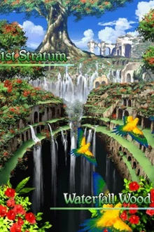 |
Thème : Waterfall Woodlands Un des gros attraits de cette strate, c'est qu'elle est construite autour de cette immense cascade qui n'a aucun impact sur le gameplay, mais en fait un lieu mémorable. L'autre intérêt, c'est le focus mis sur les puzzles autour des FOE, avec la mécanique du sol boueux (le joueur met deux étapes pour avancer d'une case, alors que les FOE ne sont pas affectés !), introduite presque en même temps que les FOE ! Enfin, le boss est particulièrement mémorable avec plusieurs gimmicks, notamment ses tentatives pour se cacher et fuir. Une excellente strate, qui réussit à être un bon tutoriel mais à casser les codes précédemment établis. |
Vous avez compris les principes de base ? Très bien, le jeu peut augmenter la pression et vous balancer de sales vacheries. La deuxième strate est une montée en puissance : vous commencez à avoir des personnages fonctionnels, mais vous faites face à des ennemis plus vicieux. Je considère que ces strates sont une introduction aux statuts et binds si vous pensiez qu'ils étaient inutiles. Le donjon devient également plus biscornu, de façon à mettre votre endurance à l'épreuve. Le boss de fin de strate est également bien plus dangereux.
| 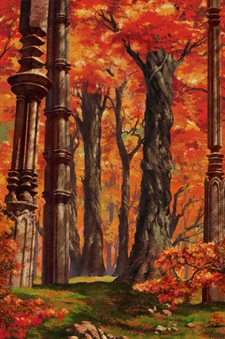 |
Thème : Ever-Scarlet Forest Encore une fois, cette strate souffre de la comparaison avec son prédécesseur : dans une première moitié, vous devez aller vers un boss optionnel qu'il faut esquiver pour voler quelque chose dans son nid, tandis qu'ensuite vous êtes chargé d'éliminer un boss dangereux. La strate est également construite comme un labyrinthe sur plusieurs niveaux : au fur et à mesure de votre progression, vous êtes amené à découvrir de nouvelles zones des étages précédents. De plus, la strate est parsemée de tuiles qui vous infligent des dégâts, ce qui rend la progression frustrante. Enfin, il faut noter les horribles FOE invisibles, qui sont en plus résistants à presque tous les types de dégâts. |
|
Thème : The Vast Primeval Hidden Grove Cette strate est coupée en deux parties. Dans la première, vous devez contourner un boss trop dangereux pour vous afin de voler quelque chose dans son nid. Dans le deuxième, vous devez tuer Cernunos, le boss de la strate. À part ça, vous devez survivre aux tuiles qui infligent des dégâts, naviguer dans un labyrinthe qui vous oblige à faire des aller-retours entre les étages et apprendre à haïr les Petaloids (sans doute les ennemis les plus détestés de la série, qui ont un AOE qui inglige le statut sommeil). Rien de très passionnant, mais assez bien rythmé. Le gros défaut de la strate, c'est que son décor est encore une forêt. |
| 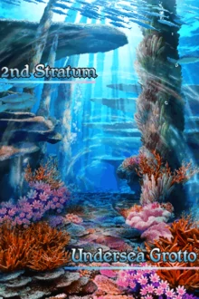 |
Thème : Water Woods of the Submarine Ridge Le décor de la strate est superbe : une grotte située sous l'océan et remplie de poissons et coquillages meurtriers. Là encore, le principe est de faire des aller-retours entre étages, mais des mécaniques supplémentaires sont introduites. Les courants, les FOE qui se promènent à la queue-leu-leu, ceux qu'il faut esquiver en empruntant des passages secrets... Il y a de la variété. C'est de plus là que le scénario accélère, où la véritable nature d'Olympia est révélée, et où vous amenez Agata et Hypatia à leur issue tragique. Le boss est potentiellement frustrant mais assez intéressant. |
|
Thème : Shrine Road of Monoliths Le décor, une série de falaises, est magnifique. Cependant, cette strate est surtout notable pour ses excellentes mécaniques et interactions avec les trois différents types de FOE. Elle se conclut magistralement par un boss ardu sans être injuste, et qui débloque les promotions. Une réussite absolue. |
|
Thème : Misty Ravine Outre la musique, la progression scénaristique et l'ambiance, cette strate est un excellent tutoriel sur les binds et les statuts. Le jeu vous fournit même, pour le dernier étage, une alliée qui peut les infliger et vous soigner, ce qui sera très utile contre le boss qui est loin d'être facile. Les mécaniques sont assez intéressantes : il y a des couloirs qui bouclent sur eux-mêmes et des FOE endormis qui se réveillent si vous affrontez des ennemis. Les trois mini-donjons ont également des mécaniques intéressantes : outre les FOE endormis, il y en a qui se déplacent en diagonale et un donjon où vous ne pouvez rester qu'un temps limité dans la grande salle centrale. Bref, une exploration intéressante des mécaniques de la série. |
Le jeu considère que vous êtes prêt. Dans les trois opus les plus récents, vous débloquez ou venez de débloquer les avancées (sous-classe ou promotion), et vos builds commencent à se mettre sérieusement en place. Il est donc temps de vous défier en augmentant encore la pression : les AOE se font plus nombreuses, les statuts et debuffs commencent à piquer, et les ennemis sont globalement de plus en plus brutaux. C'est aussi généralement là que le scénario commence à accélérer.
|
Thème : The Thousand Year Old Blue Woodland Sans doute la strate la plus faible du jeu. Elle est coupée en deux. Le joueur doit d'abord faire la carte des deux premiers étages, ce qui implique d'affronter une colonie de fourmis et leur reine. Ensuite, en continuant son exploration, il se heurte à une étrange jeune fille, qui finit par en appeler à Corotrangul, le boss de la strate. Sur le papier, c'est intéressant, mais en pratique... Les fourmis sont incroyablement frustrantes à affronter (les FOE respawnent dès qu'ils sont battus) et le combat contre leur reine est un des plus durs du jeu, tandis que la deuxième partie de la strate est très facile, presque trop calme. Quant au dernier étage, il est ridiculement petit, vu que la majorité est consacrée à une zone bonus réservée à un boss optionnel. Décevant. |
| 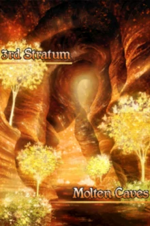 |
Thème : Cavern of Splendor Cette strate est un volcan, on marche dans la lave et affronte des monstres cracheurs de feu. En soi, il y a plusieurs mécaniques intéressantes comme les dragons (l'œuf qui éclot, le petit qui appelle sa maman et les mamans qui rejoignent les combats), la course contre les lézards à l'étage final... Mais il y a plusieurs problèmes : les tuiles de lave qui vous blessent et sont souvent inévitables, les satanées fourmis et les FOE (autres que les dragons) qui ne sont pas assez menaçants. Le boss lui-même est très frustrant : il a une superattaque qui peut vous massacrer si vous ne la bloquez pas, puis se scinde en deux parties. Mais vous devez absolument tuer les deux parties à un tour d'intervalle, sinon la restante s'autodétruit et vous perdez son drop et son expérience. À part ces deux détails, il est incroyablement facile à vaincre. Dommage... Mais, au moins, le scénario vous oblige à prendre parti. |
|
Thème : Grotto of the Adamantine Beast Cette strate est intéressante car elle présente deux visages : elle commence par être un labyrinthe de lave, avant de devenir une caverne gelée lorsque vous atteignez un certain point. Certains ennemis changent alors, et c'est une partie du puzzle du boss : vous devez l'éloigner d'une Molten Scale le temps de la geler afin de réduire de moitié ses points de vie. C'est également le seul donjon du jeu avec deux entrées différentes, qui vous permettent d'atteindre des zones différentes. Les mini-donjons sont un peu moins passionnants, mais la strate en elle-même est vraiment mémorable. |
| 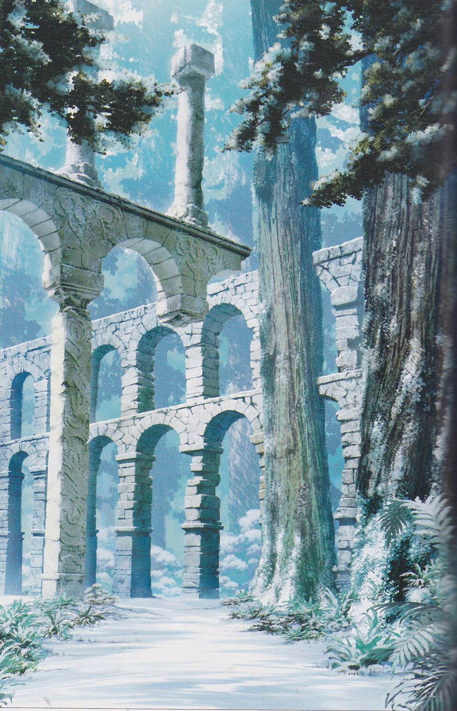 |
Thème : Woodland of Frozen Flowers Incroyable mais vrai, une strate basée principalement sur la glace et comportant de nombreux puzzles où l'on doit glisser dans un labyrinthe est géniale. C'est en grande partie possible par l'intelligence du design des puzzles et par les enjeux que l'on a. Tout d'abord, il faut explorer largement un étage organisé autour d'une immense pièce recouverte de glace. Ensuite, le joueur va découvrir le passé de la guilde Esbat, qui vont tenter de l'empêcher d'avancer vers le boss. Le combat est un moment très fort dans le jeu, aidé par la musique magnifique (Guardians of the Sorrowful Ice). Pas grand chose à critiquer, à part peut-être certains aspects du boss de la strate (qui peut être très cheap). |
|
Thème : Graveyard of Darkness Wow. Juste, wow. Quand on monte l'escalier après avoir vaincu l'Hippogryphe, on ne s'attend pas à se retrouver dans un immense cimetière éclairé par des lueurs malsaines et peuplé de revenants. Sans doute une des strates les plus mémorables de la série, avec des mécaniques excellentes : le jour, certaines tuiles infligent des dégâts mais de la lumière limite les mouvements des FOE, tandis que la nuit vous n'avez plus aucune zone où vous êtes en sécurité. Les formations d'ennemis sont bien pensées, et surtout la strate est le véritable point culminant d'Etrian Odyssey V. En effet, c'est là que vous aidez Lili et Solor à vaincre leur nemesis dans un combat au sommet entre nécromanciens. Un grand moment de jeu vidéo. |
Vos builds se précisent, vous devenez de plus en plus puissant. Le jeu peut alors vous lâcher la bride, et vous envoyer des ennemis d'autant plus dangereux. C'est le moment de vérité : si vous avez mal pensé votre équipe, vous allez peu à peu céder sous la pression et devoir repenser vos builds. Généralement un moment de transition entre l'accélération du scénario à la strate précédente et le climax à la strate suivante.
|
Thème : Rainbow Druse Après le génie de la strate précédente, celle-ci est vraiment fade. Le décor, une cave remplie de cristaux translucides, n'est ni magnifique ni passionnant. Les deux principales mécaniques sont liées à des gros cristaux sur votre chemin : d'abord, vous devez les briser, ce qui consume un tour et peut alerter des FOE ; puis ils vous téléportent jusqu'à d'autres cristaux situés ailleurs. Les formations d'ennemis sont peu intéressantes, et seul le boss sauve l'intérêt de la strate. Le Crystal Dragon alterne entre deux formes, aux compétences et résistances différentes. L'une des deux formes possède une attaque, Clear Breath, qui inflige des dégâts proportionnellement au nombre de buffs que vous avez, ce que j'ai trouvé très cheap. |
| 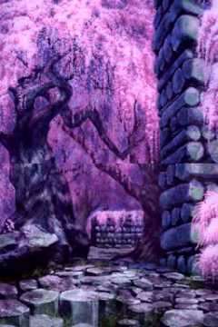 |
Thème : Cherry Tree Bridge Cette strate a un visuel magnifique, une musique splendide et... pas grand-chose d'autre. Les ennemis ne sont pas spécialement intéressants (même les Petaloids ne sont pas si menaçants que d'habitude étant donné que vous êtes largement assez puissant pour les massacrer), les mécaniques sont assez bof (trous et passages unidirectionnels), et le boss est plutôt faible. Franchement, sans sa musique, elle serait très oubliable. |
| 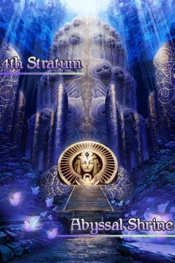 |
Thème : The Blue Sea Temple of Ritual Cette strate coche toutes les cases : des mécaniques intéressantes, des ennemis puissants, et une ambiance pesante. Dans une première partie, il faut manipuler des portes métalliques qui s'abattent quand elles sont traversées. Dans une deuxième partie, il faut se laisser tomber dans des trous afin d'atteindre des zones inaccessibles autrement. Les seules faiblesses sont que les boss (il y en a deux différents selon votre choix au cours de la strate précédente) ne sont pas spécialement passionnants, et qu'il est tout à fait possible d'éviter les puzzles de la première partie en massacrant les FOE. Autrement, c'est de la haute qualité. |
| 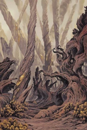 |
Thème : The Whithered Forest Un désert aride et mortel, des monstres agressifs, un design labyrinthique... Cette strate est également le lieu de la confrontation entre les humains et le peuple de la forêt. Après avoir progressé un peu, vous arrivez dans un gigantesque hall où vous devez trouver un passage secret vers la suite. Le peuple de la forêt tente de résister à vos assauts, et finit par déployer les grands moyens au dernier étage : Iwaoplen, le boss, et plusieurs FOE. Vous devez vaincre tous les FOE avant d'aller tuer le boss, d'une seule traite. La montée de la tension est palpable, et vous vous retrouvez poussés par le Radha à commettre un véritable génocide. Tragique et mémorable, cette strate est un grand cru. |
|
Thème : Library of Puppets Ce donjon est incroyable. Déjà de par son ambiance, tant visuelle que musicale : c'est sublime, mystérieux et menaçant. Ensuite par le lien entre mécaniques et scénario. Le principe est simple : des FOE patrouillent, tandis que d'autres sont éteints. Si les premiers vous repèrent, ils sonnent l'alarme et tous vous pourchassent. Il faut donc s'infiltrer discrètement et esquiver les patrouilleurs. Puis, dans les puzzles suivants, les FOE endormis bloquent le passage. Il faut donc se faire repérer pour les contourner. Or, vous avez déjà dû utiliser une diversion pour éviter les aéronefs impériaux et entrer dans la bibliothèque, et vous êtes en mission d'infiltration pour sauver une Vessel enlevée par l'Empire. Tout au long de votre avancée, vous croisez des soldats impériaux atteints par la maladie, et devrez affronter votre mentor Logre avant de le rallier à votre cause. Ceci vous donnera un avant-goût d'une des classes les plus abusées de la série : l'Imperial. Enfin, le boss est dangereux et intéressant, un point culminant du niveau. Vraiment une strate passionnante, et même les mini-donjons sont intéressants (enfin, surtout la Windy Archive et ses vents contraires). |
Le point culminant du jeu, la fin du scénario principal, le moment de vérité. Remplies d'ennemis meurtriers et de mécaniques qui sanctionnent la moindre erreur, ces strates vous poussent dans vos retranchements.
|
Thème : City of Radiant Ruin Mais à quoi pensaient-ils ?... Cette strate fait exactement un étage. Mais avant de le parcourir, vous devez retourner dans les précédents donjons, et explorer des zones secrètes avec les mêmes mécaniques mais des ennemis plus puissants. Ce qui devrait être une montée en puissance vers une apogée épique se transforme en une promenade de santé dans des zones dont vous connaissez les gimmicks. L'étage en lui-même n'est ni spécialement intéressant à parcourir ni difficile. Même le combat final est trop similaire à un boss précédent (Logre). D'autant plus décevant que cette strate vient entre deux des meilleures strates de la série... |
|
Thème : Primeval Forest Ring C'est une preuve de la qualité des cinquièmes strates de la série si celle-ci se retrouve classée quatrième. Ce vaste jardin dans une station spatiale rempli d'ennemis dangereux est un excellent donjon, bien que visuellement banal. La mécanique qui consiste à annuler la gravité pour avoir des puzzles de glace sans glace est bien pensée. Je regrette juste l'exposition du scénario, qui est dénuée de tout enjeu et ne parvient pas à être intéressant. À croire que le jeu a atteint son apogée à la fin de la troisième strate... |
| 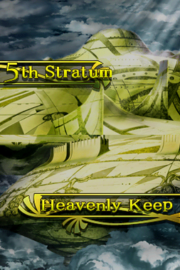 |
Thème : Heaven's Rock Seat Cette strate est un château dans le ciel. Son design est globalement symétrique, et vous devez progresser d'étage en étage en évitant les FOE et en avançant soigneusement le long de tapis roulants. Un étage tout entier est consacré à un boss, Colossus. Vous devez esquiver une multitude de FOE qui patrouillent agressivement afin d'atteindre le boss en question. Enfin, vous effectuez l'ascencion finale et confrontez l'Overlord, ce pseudo-dieu fou qui a transformé tant d'aventuriers en monstres. Le combat en lui-même est un peu décevant, mais le voyage ne compte-t-il pas plus que la destination ? |
| 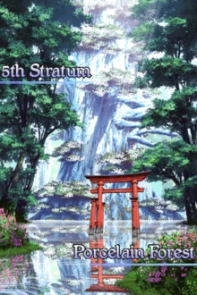 |
Thème : Chalky Woods Cette strate est un superbe jardin, magnifiquement brillant et vaguement japonisant. La musique vous berce, et vous avancez sereinement malgré les puissants ennemis... quand, soudain, vous entrez dans une pièce où la carte de l'écran du bas ne fonctionne plus : impossible de voir votre position ou celle des FOE dessus ! Si les premières zones sans radar testent votre capacité à vous repérer et à tracer des cartes précises sans voir votre position à tout moment, le jeu vous met rapidement face à des FOE agressifs, ou avec du sol boueux, voire les deux ! Plus discutable, un puzzle de téléporteurs symbolisés par des portes peut être frustrant par moments. Enfin, la confrontation finale, au thème incroyable (Their Own Brand of Justice), contre les ennemis de la route que vous avez choisi, est un moment d'anthologie. Sous son apparence innocente, cette strate est un joyau. |
|
Thème : The Capital of Shinjuku Jusqu'ici, tout laissait à penser qu'Etrian Odyssey était une série de fantasy classique dans un monde imaginé. Soudain, après avoir défait le peuple de la forêt, votre guilde atteint, loin sous le sol, les restes d'une civilisation perdue : Shinjuku, un quartier de Tokyo... Apprendre que la série se déroule dans un monde post-apocalyptique peut faire un choc, et les notes éparpillées dans la strate, qui témoignent de la chute de la civilisation face à la pollution et le choix d'utiliser des super-arbres pour drainer la corruption, sont aussi déprimantes que menaçantes. La strate consiste en l'exploration du siège du gouvernement métropolitain de Tokyo, deux tours jumelles dévastées. Le joueur doit rétablir les ascenceurs et naviguer dans le chaos, jusqu'à atteindre les profondeurs et le secret d'Yggdrasil. Au début de la strate, un combat émotionnel oppose le joueur à ses deux mentors, Ren et Tlachtga, sur une musique oppressante (Rising Again). Le joueur apprend que le Radha, qui assigne les missions, a pour but d'empêcher les humains de s'enfoncer trop profondèment au sein d'Yggdrasil. L'affrontement final oppose le joueur à Visil, le chef du Radha, qui est un des scientifiques créateurs d'Yggdrasil, fusionné avec l'arbre lui-même. Finalement, on apprend que l'exploration efficace de votre guilde va provoquer la fin d'Etria, qui vivait des aventuriers. Une fin amère pour un jeu plus tragique qu'il n'y paraît... |
Après le boss de fin, une strate optionnelle qui permet de résoudre les mystères du jeu et de mettre à l'épreuve ses talents de build. Ces strates sont brutales, avec des ennemis particulièrement dangereux et difficiles à gérer, des designs tordus et cruels et offrent l'accès à de multiples boss optionnels difficiles et un superboss final absolument psychopathique. À réserver aux masochistes.
|
Thème : Forbidden Forest Urgh, j'ai détesté cette strate. Le level-design est brutal, les ennemis dangereux ou sérieusement difficiles à tuer, et l'ambiance me pèse. Surtout... c'est encore une satanée forêt ! Alors, certes, je vois l'idée : poser une ambiance paisible et agréable avant de massacrer le joueur, mais ça reste peu original visuellement parlant. |
|
Thème : Redshift Corridor Cette strate est plutôt douce pour une sixième strate. Enfin, les ennemis sont brutaux, mais la mécanique principale est un puzzle de téléporteurs qui obéissent à des règles de fonctionnement logiques et compréhensibles. Donc ça passe. Pas grand-chose d'autre à dire, c'est une strate bien pensée, mais peut-être pas assez vicieuse (les formations sont assez agressives par contre !). |
| 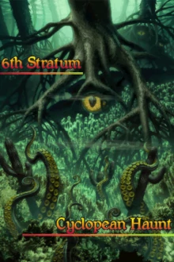 |
Thème : The Vengeful God in the Dark Ocean Abyss Le level-design est brutal, et souvent injuste (trous invisibles dans des zones sans radar, tuiles qui infligent des dégâts, yeux qui alertent les FOE, tuiles qui font tourner sur soi-même dans une zone sans radar AAAAH), mais la strate est naviguable. Le gros souci, c'est le superboss, qui est littéralement du pur bullshit qui triche en lisant les commandes que vous entrez. Un des pires combats de la série. Dommage, car l'ambiance oppressante de la strate et le build-up étaient très bons. |
|
Thème : Den of the Dark Realm Cette strate est un coup de génie. C'est un vieux laboratoire malsain, aux murs tâchés de sang, à l'ambiance pesante, peuplé d'ennemis surpuissants. Il sert à contenir un monstre violent, que le joueur doit affaiblir s'il veut avoir une chance de gagner. Chaque étage est va crescendo dans l'horreur et le danger, avec des puzzles de plus en plus difficiles et des formations de plus en plus agressives. Une réussite totale. |
|
Thème : The Cavern of True Red Cette strate est l'épitome de l'injustice : des puzzles de téléporteurs immondes et sans aucun sens, des culs-de-sac par dizaines, des trous invisibles (quoique, pour les éviter il suffit de noter le chemin emprunté par les FOE), des ennemis brutaux et sans pitié... Et pourtant, ça fonctionne. L'ambiance est claustrophobique et répugnante, on a l'impression de marcher dans une mare de sang et que les murs sont faits de chair et d'organes, on sent que le lieu cherche à nous décourager de mettre un terme à la corruption qui y règne. Quand on le conquiert enfin, c'est un sentiment d'euphorie absolue qui nous submerge. C'est cathartique. |